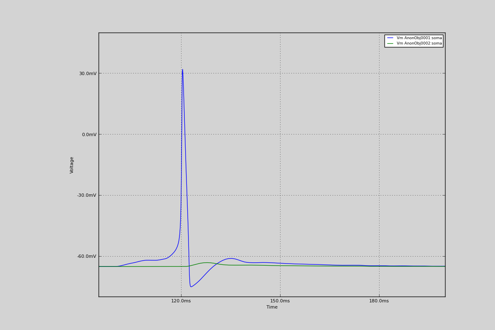

16. 2 cells connected with an AMPA synapse
2 cells connected with an AMPA synapse.
Timed input into a cell causes an action potential, which causes an EPSP in another cell via an excitatry synapse.
Code
from morphforgecontrib.stdimports import SynapticTriggerAtTimes
from morphforgecontrib.stdimports import SynapticTriggerByVoltageThreshold
from morphforgecontrib.simulation.synapse_templates.neurounit import *
from morphforgecontrib.simulation.synapse_templates.exponential_form.expsyn.core import *
from morphforgecontrib.simulation.synapse_templates.exponential_form.exp2syn.core import *
from morphforgecontrib.simulation.synapse_templates.exponential_form.exp2synnmda.core import *
from morphforge.stdimports import *
#from morphforgecontrib.simulation.channels.simulatorbuiltin.sim_builtin_core import BuiltinChannel
from morphforgecontrib.data_library.stdmodels import StandardModels
def simulate_chls_on_neuron():
# Create the environment:
env = NEURONEnvironment()
sim = env.Simulation()
# Create a cell:
cell1 = CellLibrary.create_cell(celltype=None, modelsrc=StandardModels.HH52, sim=sim)
cell2 = CellLibrary.create_cell(celltype=None, modelsrc=StandardModels.HH52, sim=sim)
exp2template = env.PostSynapticMechTemplate(
PostSynapticMech_Exp2SynNMDA_Base,
template_name='expsyn2tmpl',
tau_open = 5 * units.ms, tau_close=20*units.ms, e_rev=0 * units.mV, popening=1.0, peak_conductance = qty("1:nS"), vdep=False,
)
syn = sim.create_synapse(
trigger = env.SynapticTrigger(
SynapticTriggerAtTimes,
time_list = (100,105,110,112,115, 115,115) * units.ms ,
),
postsynaptic_mech = exp2template.instantiate(cell_location = cell1.soma, ),
)
syn = sim.create_synapse(
trigger = env.SynapticTrigger(
SynapticTriggerByVoltageThreshold,
cell_location=cell1.soma,
voltage_threshold=qty("0:mV"),
delay=qty('1:ms'),
),
postsynaptic_mech = exp2template.instantiate(cell_location = cell2.soma, ),
)
# Define what to record:
sim.record(what=StandardTags.Voltage, name="SomaVoltage1", cell_location = cell1.soma)
sim.record(what=StandardTags.Voltage, name="SomaVoltage2", cell_location = cell2.soma)
# run the simulation
results = sim.run()
return results
results = simulate_chls_on_neuron()
TagViewer(results, timerange=(95, 200)*units.ms, show=True)
Figures

Download Figure
{kind=link}
Output
No handlers could be found for logger "neurounits"
2013-10-19 15:41:12,539 - morphforge.core.logmgr - INFO - Logger Started OK
2013-10-19 15:41:12,539 - DISABLEDLOGGING - INFO - _run_spawn() [Pickling Sim]
No handlers could be found for logger "neurounits"
2013-10-19 15:41:14,127 - morphforge.core.logmgr - INFO - Logger Started OK
2013-10-19 15:41:14,127 - DISABLEDLOGGING - INFO - Ensuring Modfile is built
NEURON -- Release 7.1 (359:7f113b76a94b) 2009-10-26
Duke, Yale, and the BlueBrain Project -- Copyright 1984-2008
See http://www.neuron.yale.edu/credits.html
Openning ScriptFlags
/auto/homes/mh735/hw/NeuroUnits/ext_deps
Loading StdLib file: /auto/homes/mh735/hw/NeuroUnits/src/neurounits/../stdlib/stdlib.eqn
Loading Bundle from: /local/scratch/mh735/tmp/morphforge/tmp/simulationresults/37/37e71657dcc1a402a4534552a1e69169.bundle (17k) : 0.779 seconds
set(['conductance', 'reversalpotential'])
__dict__ {'mm_neuronNumber': None, 'cachedNeuronSuffix': None, 'reversalpotential': array(-54.3) * mV, '_name': 'LkChl', '_simulation': None, 'conductance': array(3.0) * s**3*A**2/(kg*m**4)}
Executing: /opt/nrn//x86_64/bin/modlunit /local/scratch/mh735/tmp/morphforge/tmp/tmp_d89dd47021cf0f922e1856874a78ea72.mod
/local/scratch/mh735/tmp/morphforge/tmp/modbuild_14704
Executing: /opt/nrn//x86_64/bin/nocmodl tmp_d89dd47021cf0f922e1856874a78ea72.mod
Executing: /opt/nrn//share/nrn/libtool --mode=compile gcc -DHAVE_CONFIG_H -I"." -I".." -I"/opt/nrn//include/nrn" -I"/opt/nrn//x86_64/lib" -g -O2 -c -o tmp_d89dd47021cf0f922e1856874a78ea72.lo tmp_d89dd47021cf0f922e1856874a78ea72.c
Executing: /opt/nrn//share/nrn/libtool --mode=link gcc -module -g -O2 -shared -o tmp_d89dd47021cf0f922e1856874a78ea72.la -rpath /opt/nrn//x86_64/libs tmp_d89dd47021cf0f922e1856874a78ea72.lo -L/opt/nrn//x86_64/lib -L/opt/nrn//x86_64/lib /opt/nrn//x86_64/lib/libnrniv.la -lnrnoc -loc -lmemacs -lnrnmpi -lscopmath -lsparse13 -lreadline -lncurses -livoc -lneuron_gnu -lmeschach -lsundials -lm -ldl
OP1: libtool: compile: gcc -DHAVE_CONFIG_H -I. -I.. -I/opt/nrn//include/nrn -I/opt/nrn//x86_64/lib -g -O2 -c tmp_d89dd47021cf0f922e1856874a78ea72.c -fPIC -DPIC -o .libs/tmp_d89dd47021cf0f922e1856874a78ea72.o
OP2: libtool: link: gcc -shared .libs/tmp_d89dd47021cf0f922e1856874a78ea72.o -Wl,-rpath -Wl,/opt/nrn/x86_64/lib -Wl,-rpath -Wl,/opt/nrn/x86_64/lib -L/opt/nrn//x86_64/lib /opt/nrn/x86_64/lib/libnrniv.so /opt/nrn/x86_64/lib/libnrnoc.so /opt/nrn/x86_64/lib/liboc.so /opt/nrn/x86_64/lib/libmemacs.so /opt/nrn/x86_64/lib/libnrnmpi.so /opt/nrn/x86_64/lib/libscopmath.so /opt/nrn/x86_64/lib/libsparse13.so -lreadline -lncurses /opt/nrn/x86_64/lib/libivoc.so /opt/nrn/x86_64/lib/libneuron_gnu.so /opt/nrn/x86_64/lib/libmeschach.so /opt/nrn/x86_64/lib/libsundials.so -lm -ldl -pthread -Wl,-soname -Wl,tmp_d89dd47021cf0f922e1856874a78ea72.so.0 -o .libs/tmp_d89dd47021cf0f922e1856874a78ea72.so.0.0.0
libtool: link: (cd ".libs" && rm -f "tmp_d89dd47021cf0f922e1856874a78ea72.so.0" && ln -s "tmp_d89dd47021cf0f922e1856874a78ea72.so.0.0.0" "tmp_d89dd47021cf0f922e1856874a78ea72.so.0")
libtool: link: (cd ".libs" && rm -f "tmp_d89dd47021cf0f922e1856874a78ea72.so" && ln -s "tmp_d89dd47021cf0f922e1856874a78ea72.so.0.0.0" "tmp_d89dd47021cf0f922e1856874a78ea72.so")
libtool: link: ( cd ".libs" && rm -f "tmp_d89dd47021cf0f922e1856874a78ea72.la" && ln -s "../tmp_d89dd47021cf0f922e1856874a78ea72.la" "tmp_d89dd47021cf0f922e1856874a78ea72.la" )
loading membrane mechanisms from /local/scratch/mh735/tmp/morphforge/tmp/modout/mod_468d766f8a3c48bce3bbb5aa16488aa9.so
loading membrane mechanisms from /local/scratch/mh735/tmp/morphforge/tmp/modout/mod_039f076519486e21356008ffe3ac5ef7.so
loading membrane mechanisms from /local/scratch/mh735/tmp/morphforge/tmp/modout/mod_10528623af7b919560a2e2606bf0cd9c.so
loading membrane mechanisms from /local/scratch/mh735/tmp/morphforge/tmp/modout/mod_e53416588be6b02ed52a843da0f43a15.so
1
1
0.01
0
1
50000
1
50000
1
Running Simulation
Time for Extracting Data: (2 records) 0.00108790397644
Running simulation : 0.652 seconds
Post-processing : 0.004 seconds
Entire load-run-save time : 1.435 seconds
Suceeded
/auto/homes/mh735/hw/NeuroUnits/ext_deps
Openning ScriptFlags
Loading StdLib file: /auto/homes/mh735/hw/NeuroUnits/src/neurounits/../stdlib/stdlib.eqn
PlotMnager:Saving _output/figures/multicell_simulation010/{png,svg}/fig000_Autosave_figure_1.{png,svg}